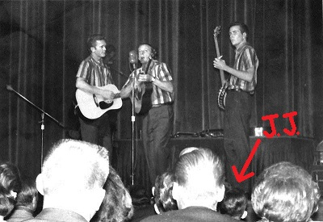

INSIDE JUPITER JACK'S BOOTH
Want a glimpse into the mind of the host of Lost Moon Radio?
A Message from Jupiter Jack:
Hello, Earth. Am I coming in clear?
My name is Jupiter Jack, late-night disc jockey, amateur cosmonaut, and former tambourine player for at least three short-lived prog rock bands. If you're reading this message, then you've tuned your browser to a signal coming straight from the Lost Moon of Jupiter, where I make my home.
As my regular listeners know, I left your planet on April 1st, 1977, in a small rocketship of my own construction. The trip was fraught with dangers - asteroids, cosmic rays, space vampires - but at the end of the journey I touched down safely on the surface of the Lost Moon.
Still, I keep an eye on that spinning blue marble called Earth. And I send my observations down to you whenever I can, whether over the radiowaves or right here on the Galactic Wide Web.
If you're an old-fashioned fan of the written word, interested in the stories and reflections of a record-spinning space traveler, I encourage you to check out my personal blog, which you can find HERE.
Lines are open, folks.
--Jupiter Jack

A young Jupiter Jack attends his first rock concert (the Kingston Trio) c. 1959